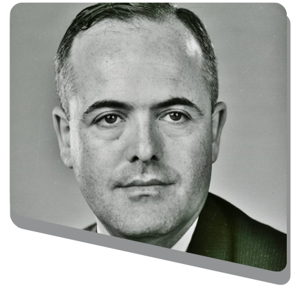

Criação dos Bits (1937)
Claude Shannon, engenheiro, publicou sua tese de mestrado intitulada "A Mathematical Theory of Communication". Nessa tese, Shannon introduziu a ideia de que informações poderiam ser representadas como símbolos binários (0 e 1).
A tese de Shannon não apenas revolucionou a forma como entendemos a comunicação e a transmissão de dados, mas também teve um impacto significativo em áreas como telecomunicações, ciência da computação, criptografia e muito mais.
Claude Shannon
Criação dos Bytes (1956)
O termo byte foi criado por Werner Buchholz em 1956 durante o desenho do computador IBM Stretch. Inicialmente, byte era um grupo de 1 a 6 bits, mas logo se transformou em um de 8 bits.
O byte de 8 bits oferecia uma maior flexibilidade para representar uma variedade maior de caracteres e permitia operações binárias mais consistentes e eficientes. Essa padronização acabou se tornando a base para o desenvolvimento de sistemas de codificação de caracteres, como ASCII.
Werner Buchholz
O avanço tecnológico levou à necessidade de medir grandes quantidades de dados de forma mais conveniente. Surgiram então múltiplos de bytes:
- kilobyte (KB) = 1024 bytes.
- megabyte (MB) = 1024 kilobytes.
- gigabyte (GB) = 1024 megabytes.
- terabyte (TB) = 1024 gigabytes.
- petabyte (PB) = 1024 terabytes.
- exabyte (EB) = 1024 petabytes.
- zettabyte (ZB) = 1024 exabytes.
Cada um desses é uma progressão exponencial de 1024 (ou 1000, dependendo do contexto) vezes o tamanho do byte anterior.